A simulation-budget decision system for aerodynamic maps.
Open CFD cases
1000Geometry features
273D bridge cases
484Core map cases
15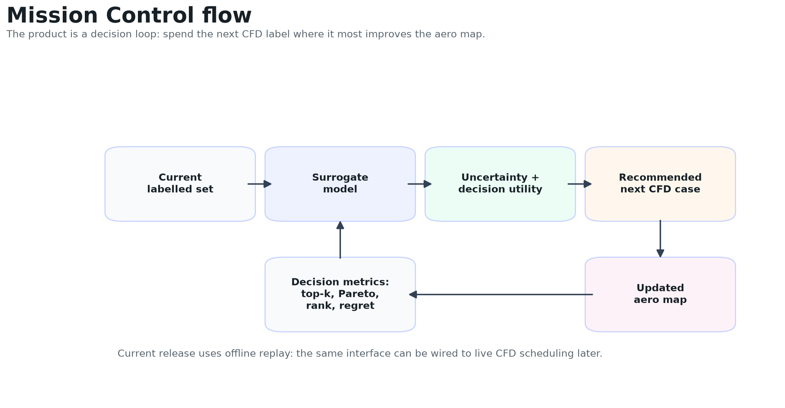
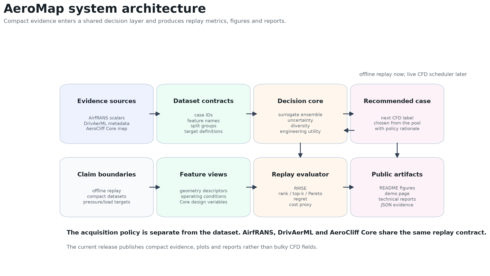
AirfRANS proves simulation-budget decision learning on a real open-CFD benchmark. Regret-aware utility v2 is recommended for this geometry-disjoint domain.
DrivAerML proves compact 3D automotive scalar practicability. Diversity is currently recommended there, showing Mission Control selects policies by domain evidence.
The benchmark uses a geometry-disjoint split over deterministic descriptors/hashes and asks which acquisition method builds the best aero map under the same label budget.
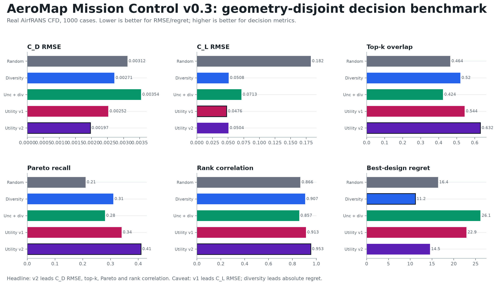
| Method | C_D RMSE | C_L RMSE | Top-k | Pareto | Rank | Regret |
|---|---|---|---|---|---|---|
| Random | 0.003119 | 0.182288 | 0.464 | 0.210 | 0.866 | 16.389 |
| Diversity | 0.002714 | 0.050832 | 0.520 | 0.310 | 0.907 | 11.195 |
| Utility v1 | 0.002525 | 0.047634 | 0.544 | 0.340 | 0.913 | 22.886 |
| Regret-aware utility v2 | 0.001966 | 0.050445 | 0.632 | 0.410 | 0.953 | 14.526 |
The DrivAerML bridge answers the practical-use objection: AeroMap is no longer only a 2D AirfRANS exercise. It can ingest compact 3D automotive-aero scalar metadata and real STL geometry.
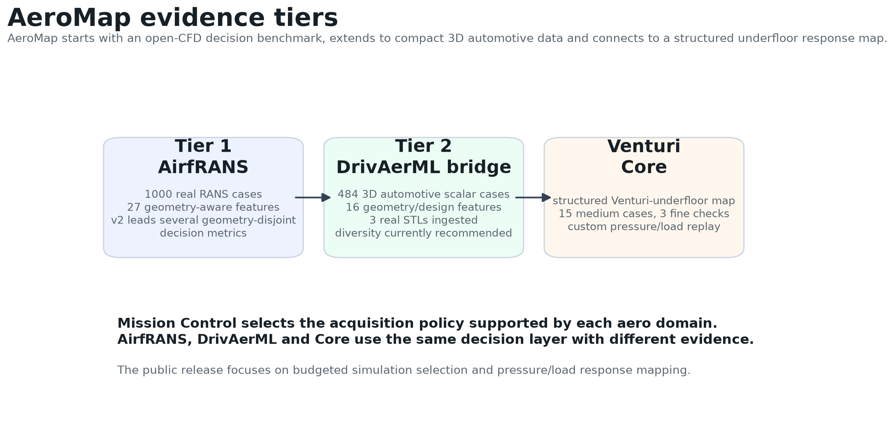
DrivAerML was selected from HiLiftAeroML, DrivAerML and AhmedML because compact all-case geometry parameters and force/moment summaries were available.
484 cases, 16 geometry/design features, C_D and C_L scalar targets, and a compact NPZ built from metadata rather than bulk field downloads.
Three cached DrivAerML STLs, about 753k triangles each, were parsed into surface descriptors and sampled point clouds.
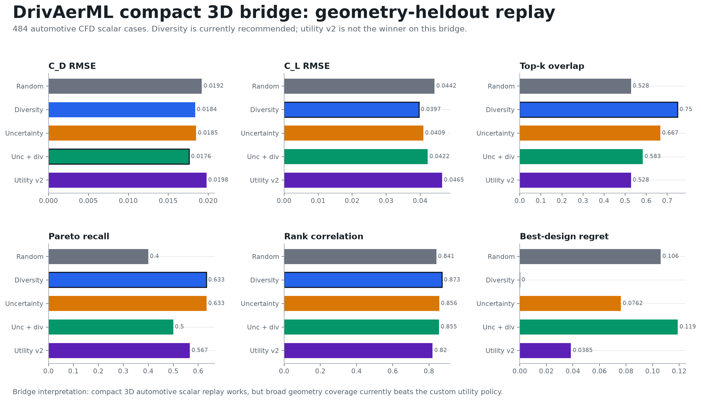
Interpretation: diversity is currently recommended for the DrivAerML compact 3D scalar bridge. Regret-aware utility v2 improves regret versus random, but it does not beat diversity here.
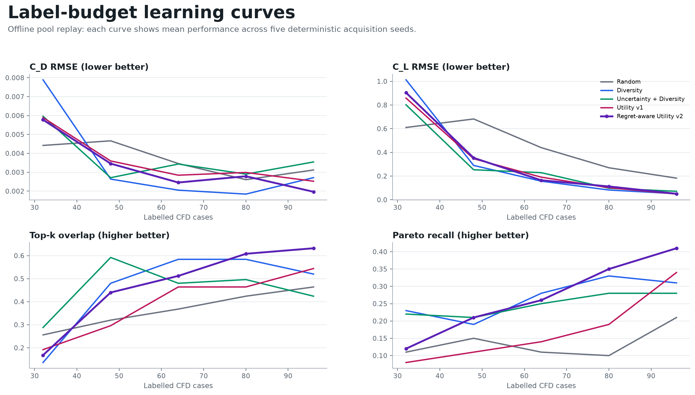
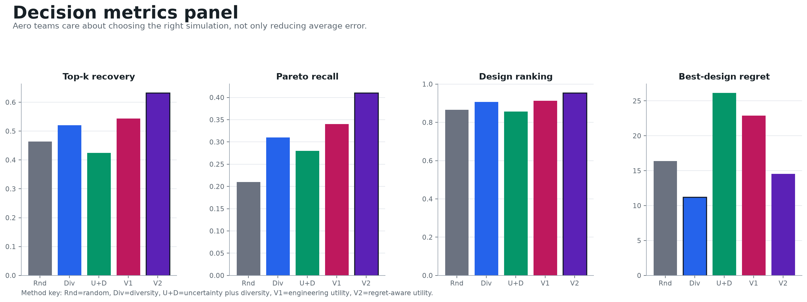
Use regret-aware utility v2 for AirfRANS geometry-disjoint. Use diversity for the DrivAerML compact 3D bridge. Mission Control follows the evidence for each domain.
There is no universal winner. Utility v1 has the best AirfRANS lift RMSE, and diversity is strongest on DrivAerML broad decision quality.
AeroCliff Core is a structured Venturi-underfloor benchmark. It gives Mission Control a custom pressure/load response surface for the public MVP.
Medium map
15/15Fine sanity
3/3Best replay
Utility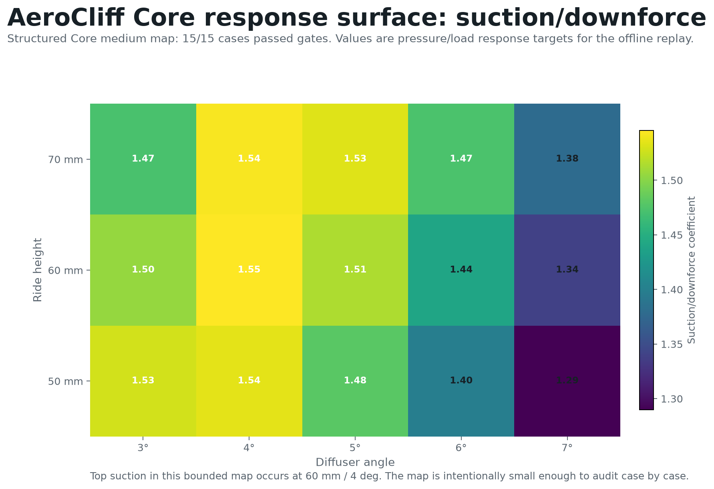
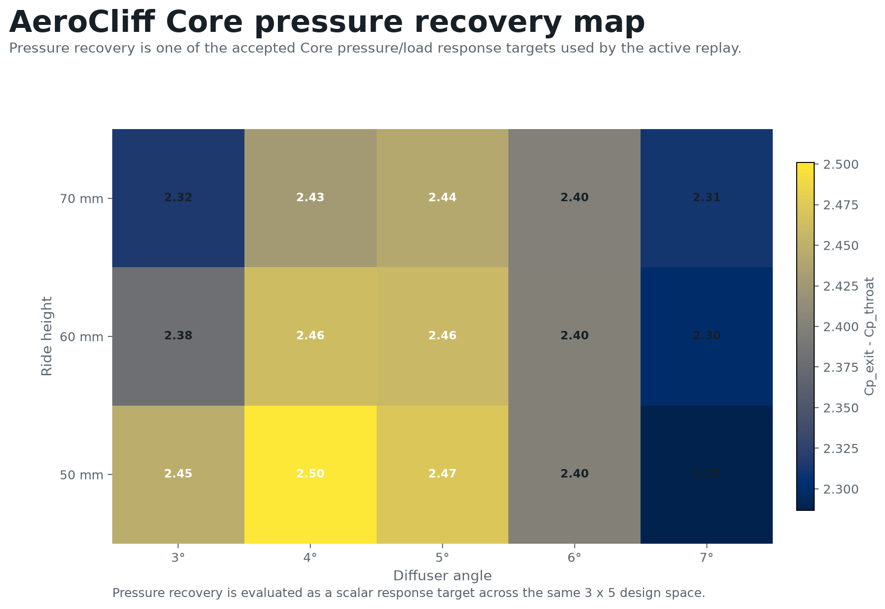
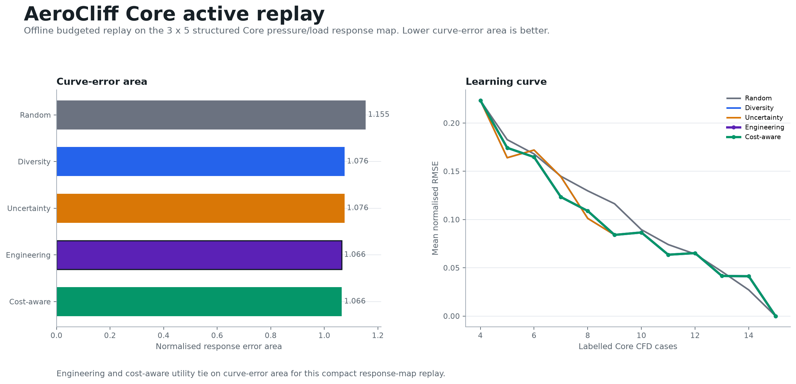
AeroCliff Core is the custom underfloor benchmark inside AeroMap. The full 3D extension lane builds from the same data contracts when higher-fidelity targets are available.
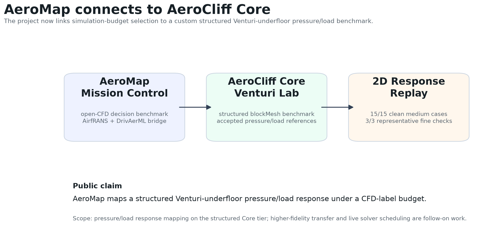